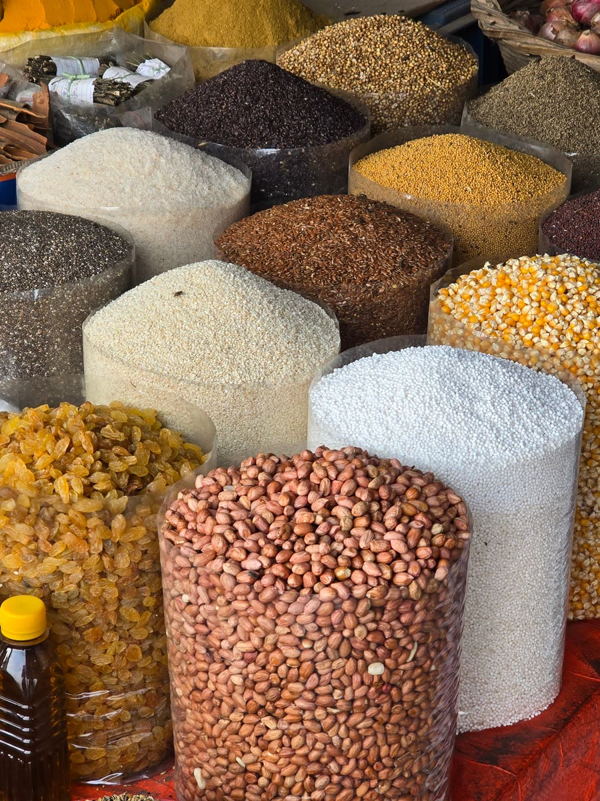

Dried fish (shutki)
- Who buys
- Gulf importers; Bengali grocers in the UK, USA and Italy
- Peak demand
- Year-round; drying season October–March
- Typical shelf life
- 6–12 months, vacuum packed
- Packs
- Vacuum packs 100 g–1 kg; 5–20 kg cartons

Dried fish, aromatic rice, muri, chira, semai, spices, tea, biscuits and pulses: the dry foods your customers buy every week, checked lot by lot and packed with the labels your market needs.
In short: Most Bangladeshi dry food is bought by Gulf importers and by Bengali grocery importers abroad. The UAE is the largest buyer of Bangladeshi spices, followed by Malaysia, Kuwait and Oman (OEC: Bangladesh spice exports by destination), and the Middle East, especially Saudi Arabia, the UAE and Kuwait, is the main market for dried fish (The Financial Express: how shutki can be a mainstay of Bangladesh's fisheries exports). Dry food ships in ordinary dry containers, so several products and suppliers can share one container.
Shelf lives are typical values for well-packed product. We check each supplier's declared shelf life and the remaining shelf life at shipment against your market's rules.
Ramadan 2027
Ramadan is expected to begin around 8 February 2027 and Eid al-Fitr about a month later; exact dates depend on the moon sighting. Work back from the shelf date:
Build a mixed container
Add products to your quote. We find the best-qualified supplier for each line, check every lot and load them together in one 20′ or 40′ container.
| Product | HS | Forms | Main markets | Quote |
|---|---|---|---|---|
| Dried Bombay duck লইট্টা শুঁটকি | 0305 | Sun-dried, salt-free | UK · Middle East · USA | |
| Dried ribbonfish ছুরি শুঁটকি | 0305 | Sun-dried | UK · Middle East | |
| Dried shrimp চিংড়ি শুঁটকি | 0306 | Sun-dried | UK · Middle East | |
| Mixed dried sea fish মিশ্র সামুদ্রিক শুঁটকি | 0305 | Sun-dried, vacuum packed | UK · Middle East · USA | |
| Dried pomfret রূপচাঁদা শুঁটকি | 0305 | Sun-dried, whole; vacuum packed | Middle East · UK · USA | |
| Dried anchovy কাচকি ও ফাসা শুঁটকি | 0305 | Sun-dried, cleaned; retail packs | Middle East · UK · USA | |
| Dried croaker লাল পোয়া শুঁটকি | 0305 | Sun-dried, split | Middle East · UK | |
| Salted hilsa নোনা ইলিশ | 0305 | Salted, cured | Middle East · UK | |
| Aromatic rice (Kalijira, Chinigura, Kataribhog) সুগন্ধি চাল (কালিজিরা, চিনিগুঁড়া, কাটারিভোগ) | 1006 | Milled, parboiled; 1–25 kg | Middle East · UK · USA · EU | |
| Red & brown rice লাল ও বাদামি চাল | 1006 | Husked brown, red parboiled; 1–25 kg | UK · Middle East · USA | |
| Puffed rice মুড়ি | 1904 | Retail packs | UK · Middle East · USA | |
| Flattened rice চিড়া | 1904 | Retail packs | UK · Middle East · USA | |
| Popped rice খই | 1904 | Retail packs | UK · Middle East · USA | |
| Vermicelli & laccha semai সেমাই ও লাচ্ছা সেমাই | 1902 | Retail packs | Middle East · UK | |
| Rice flour & pitha mixes চালের গুঁড়া ও পিঠার মিক্স | 1102 / 1901 | Retail packs | UK · Middle East · USA | |
| Turmeric হলুদ | 0910 | Dried finger, powder | Middle East · UK · EU | |
| Dried red chilli শুকনা মরিচ | 0904 | Whole, powder | Middle East · UK | |
| Coriander ধনিয়া | 0909 | Seed, powder | Middle East · UK | |
| Black cumin (nigella) কালোজিরা | 0910 | Seed, oil | Middle East · UK | |
| Indian bay leaf তেজপাতা | 0910 | Dried leaf, retail and bulk | Middle East · UK · USA | |
| Mustard seed সরিষা দানা | 1207 | Cleaned seed, retail packs | Middle East · UK | |
| Panch phoron & whole spice blends পাঁচফোড়ন ও গোটা মসলা | 0910 | Retail packs | UK · Middle East · USA | |
| Spice mixes (masala) মসলা মিক্স | 0910 | Retail packs | UK · Middle East · USA | |
| Tea চা | 0902 | CTC black, green, orthodox | Pakistan · UAE · UK | |
| Green & organic tea সবুজ ও অর্গানিক চা | 0902 | Loose leaf, tea bags | EU · USA · Japan · Middle East | |
| Sesame seed তিল | 1207 | Cleaned, natural | Asia · Middle East | |
| Biscuits & bakery বিস্কুট ও বেকারি | 1905 | Retail packs, cartons | Middle East · Africa · UK · India | |
| Toast biscuits & dry cake (rusk) টোস্ট বিস্কুট ও ড্রাই কেক | 1905 | Retail packs, cartons | Middle East · UK · USA · Malaysia | |
| Snacks (chanachur, chips) চানাচুর ও চিপস | 2106 / 2005 | Retail packs | UK · Middle East · USA | |
| Instant noodles ইনস্ট্যান্ট নুডলস | 1902 | Retail packs | Middle East · Africa · Asia | |
| Lentils & pulses (packed) ডাল (প্যাকেটজাত) | 0713 | Retail packs 500 g–5 kg | Middle East · UK · USA | |
| Ready mixes (halim, kheer, firni) রেডি মিক্স (হালিম, ক্ষীর, ফিরনি) | 1901 | Retail packs | UK · Middle East · USA | |
| Mustard oil সরিষার তেল | 1514 | PET, tins | UK · Middle East | |
| Date-palm jaggery খেজুর গুড় | 1702 | Blocks, liquid (seasonal, December–February) | UK · Middle East · USA | |
| Cane jaggery আখের গুড় | 1701 | Blocks | UK · Middle East | |
| Honey (Sundarbans, mustard) মধু (সুন্দরবন, সরিষা) | 0409 | Glass, PET | Middle East · UK |
Gulf compliance
Bengali grocery importers
FAQ
Spices, dried fish, aromatic rice, puffed and flattened rice, semai, biscuits and snacks. The UAE is the largest buyer of Bangladeshi spices, followed by Malaysia, Kuwait and Oman, and the Middle East is the main market for Bangladeshi dried fish.
From 500 kg per product, or one mixed container that combines several products and suppliers. Dried fish and spices can also go by air in vacuum packs for trial orders.
They can. Gulf markets require Arabic labelling with production and expiry dates. We check the label text against GCC rules before printing, and many suppliers already print bilingual packs.
Ramadan is expected to begin around 8 February 2027, depending on the moon sighting. To have stock on Gulf shelves in late January, confirm the order by 15 December 2026.
We test moisture, salt and pesticide residues for every lot, because insecticide misuse during drying is a known risk. Only lots that pass are packed and shipped.
Dry food from Bangladesh
Send product names, packs and volumes. You receive one price offer within 24 hours, with each supplier qualified for your market.